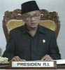

|

|
-
New president, same politic.
The autocratic Suharto, who ruled Indonesia for 32 years, was replaced recently
by his friend and vice president, Habibie.
As president, Habibie has promised to introduce political reforms
and boost the economy, but nothing has changed!
|